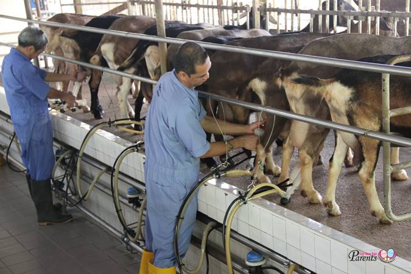

ABOUT THEM
The Only Goat Farm Since 1988
With more than 30 years of establishment, Hay Dairies is the only goat farm in Singapore since 1988. Our farm has more than 800 goats of mixed breed with origin heritage from Minnesota, United States. The goats in Hay Dairies are fed with Alfalfa Hay from United States which is high in protein, minerals and is free from Genetically Modified Organism (GMO). They also complement our goats’ diet with a special feed from Australia that is based on grains, vitamins, minerals and is free from Genetically Modified Maize (GMM).
Hay Dairies goat farm meets agreed standards of food safety, animal welfare as governed by Singapore Food Agency (SFA) as well as environmental protection as governed by National Environment Agency (NEA). They are independently audited by SGS (Singapore) to ensure that they maintain top quality supply of fresh goats’ milk for you to enjoy.
They use the latest milking, pasteurising process and bottling machines to produce fresh goat milk for sale to customers through direct farm purchase, home delivery or selected store outlets in Singapore.
Hay Dairies serves a niche market locally, providing an alternative to those who seeks nature next best thing to mother’s milk and understand the benefits of consuming this healthy beverage. With a clear direction to provide consistent quality at all stages of their process, they have been able to produce quality assured goat milk that continues to be enjoyed by an increasing number of consumers. The farm also welcome walk-in visits by individual/families as well as conduct educational tour for large group.

About Them
FOLLOW THEM ON:


Address : 3 Lim Chu Kang Lane 4, Singapore 718859
Phone : (65) 6792 0931
Email : order@haydairies.com.sg